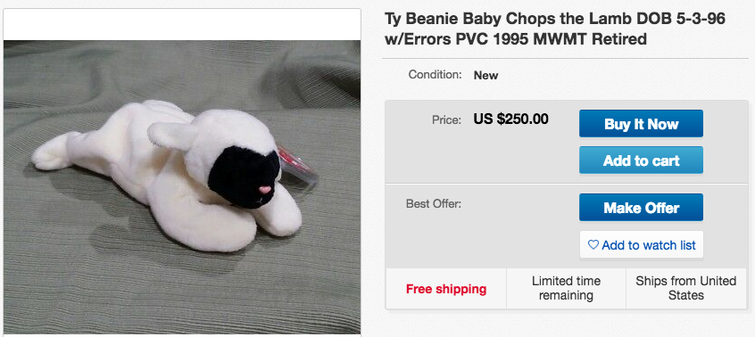

Thank you!
How To Not
Get Dizzy
Five Things Figure Skating Taught Me About Debugging My Life and Career
Created by Aimee Knight / @Aimee_Knight
From the age of 5 to 18 (?) I was a professional figure skater.
I know that’s not news to most of you. I’ve talked about it on podcasts. It’s the first part of every bio you’ll ever read about me. I mean, it’s the title of this speech.
If it’s not in the title of the speech you were expecting to see, you’re probably in the wrong room.
When people find out I used to be a professional figure skater, they always ask me the same three questions.
- Can you do a triple axel?
- Can you lift your leg over your head?
- And how do you not get dizzy doing all those spins?
The answers to the first two questions are easy
- No, but I can do a double axel.
- Yes, I can lift my leg over my head, but if you’re the kind of person who asks me that, I can guarantee that you’ll never ever get to see it happen.
Then there’s the third question,
“How do you not get dizzy?”
Out on the ice, we’re spinning at more than
300 revolutions per minute; the same amount of centrifugal force they use to train astronauts.
Ever hear of the vomit comet?
It’s the simulator NASA uses to get astronauts ready for space.
Look on YouTube and you’ll see lots of big, tough jet pilots barfing their guts out.
Go to a competition any weekend and you’ll see twelve nine-year-olds spinning at least that fast and not a drop of vomit in sight.
How do we not get dizzy?
The first part of that answer’s easy,
and then it gets more complicated.
Let’s take the easy part first.
How do we not get dizzy?
Say it with me.
Practice.
Repetition creates muscle memory.
In my case, I’m talking about a whole lot of repetition; practicing morning, noon and night for hours, months and years.
Missing out on pretty much every childhood and teenage rite of passage.
Lots and lots of falls,
sprains and breaks.
When I was (AGE) I broke my tailbone.
Do you know the worst thing about a broken tailbone?
There’s no cast.
Think about it: if you break your wrist, people see your cast and ask what happened.
When you’re hobbling around with a cane and a sore butt, people avoid eye contact and get the heck out of your way.
They’re not sure if they want to hear the story. Well, they probably do want to hear the story. They just don’t know if they want to hear it from you.
Lesson #1:
“Suck it up, Buttercup!”
I had a coach that used to shout that at me.
It stings when you’re 7,
but wow does it prepare you for life.
If there’s one thing being a professional athlete teaches you, it’s how to lose.
In life, just like in sports, you WILL lose.
Badly.
Over and over again you’ll get your
butt handed to you.
You’ll lose because you made a mistake,
because someone else made a mistake,
or for no discernable reason at all.
Suck it up, get used to it and get back on the ice.
I don’t mean get complacent.
No one likes losing less than a professional athlete. It’s against our DNA.
But it’s a fact of life.
The goal is to win more than you lose.
If you think success means winning every single time, you’re in for a lifetime of disappointment.
When it happens, accept the defeat as gracefully as possible and examine it to see what you could have done to either change the outcome or which red flags you missed along the way.
Show of hands –
how many people have managed to delete the production database?
You better believe my hand’s up.
Thank God for back-ups.
The point is, we learned, and we lived to code another day.
Get up, dust off yourself off and get back on the rink.
Do it to show the doubters your resilience, but more importantly, to remind to yourself that the moments of our biggest defeats are also the seeds of our biggest triumphs.
I love being an engineer.
It’s my passion and my tribe and it gives me purpose and hope and all the good stuff.
As you can see, I get excited about it and I love getting other people excited about it.
And this, all of this, my entire career, was born out of one of my biggest personal defeats.
In my early twenties I married what I thought was the perfect guy.
Don’t worry, this doesn’t get too sad.
He’s not perfect, but he’s a great guy.
He just wasn’t the right guy for me.
And I wasn’t the right woman for him.
It was all great on paper.
He was a military officer. A man in uniform.
We were freaking adorable.
Seriously, you could put us in a remake of “Dawson’s Creek/ Glee/ Saved by the Bell.”
In hindsight, what he really wanted was a
Playboy playmate.
I didn’t realize that until hindsight,
but there were signs from the beginning.
One of the signs was that his girlfriend before me was an actual playmate.
Things got bad when he started suggesting I get plastic surgery.
Word to the wise.
If you’re ever in that situation, don’t do what I did and ask your dad if he thinks you should get it.
So I didn’t learn it from skating, but there’s an extra lesson for you –
Bonus Lesson:
Don’t ask your dad if he thinks you need a boob job.
Back to learning from failure.
Also, eyes up here.
So I’m in a marriage that isn’t what either of us signed up for, I’m following someone else’s career around the country, and I’m working in marketing, hating every second of it.
But I knew I needed to
“suck it up, Buttercup.”
I had to find some way to pick myself up and get back on the ice, if not literally, then figuratively.
The company I was working for had a terrible website; really clunky and outdated.
I kept making requests and suggestions to improve it, but no one seemed to have the knowledge or willingness to change it.
Late one night while my husband was deployed I thought, “No one else is fixing the website,
maybe I’ll give it a try.”
So for weeks, I’d be awake in the middle of the night teaching myself to code by making changes on the live site and then reverting it back before anyone could see.
And in doing that – just messing around
with their site – I got hooked.
I got totally obsessed with programming,
which was fantastic.
Now instead of being tempted to feel sorry for myself, I was making the most of the situation and learning to code with the time and resources I had available.
Which brings me to the next life lesson I learned from skating –
Lesson #2:
Push sideways to move forward
That’s what you do when you skate.
How many of you know how to ice skate?
How many go once a year over the holidays and hug the wall all the way around?
It still counts.
You push sideways to move forward.
It’s not a terrible way to approach life.
When the road directly ahead of you is blocked, broken or just makes no sense at all,
push sideways and if you push steadily enough, eventually you’ll find yourself
ahead of where you were.
I promise you I didn’t know that messing around on my boss’ website would get me here.
All I knew was that I bored and lonely
and not being challenged.
I started going to meet ups and all people wanted to talk about was code.
I found my tribe.
I drove all over the place to learn more programming.
And if you’ve ever done a long road trip in a (YEAR/ MAKE OF CAR,) you’ll understand just how obsessed I was.
Lesson #3:
Be coachable
It’s not enough to have the desire
to acquire the knowledge.
You have to be willing not only to listen to what you’re being told, but to truly hear it.
If you’re doing something the wrong way and someone out there is willing to take the time to correct your form, take it in the spirit in which it’s given, try to apply the change and say thank you.
Be humble enough to believe that
there are people out there that have
more knowledge than you do.
I know what I’m saying sounds obvious, but you’d be surprised how many people can’t manage it.
Raise your hand if you know or have worked with someone who can’t take criticism.
Look at all those hands.
It’s fun, isn’t it?
When you try to point out something they’ve done wrong or even something they’ve done well, but could do better or more efficiently – to make their life easier – they have a thousand reasons why the way they did it was the right way.
Whatever the subject, they know better.
I have a name for people like that…

millennials.
To be fair, it’s not only millennials.
I’ve watched it trip up people of all ages.
Who wants that person on their team?
They may be good at what they do,
but they’re not worth the headache.
My best coaches always told me to
“control the controllable.”
Sometimes the only thing that’s within your control is your own attitude.
Have a good one and be coachable.
Also, be willing to coach others.
Lesson #3 1/2:
Be willing to coach others
Actively pass on the knowledge you’ve acquired.
I’m not only talking about the practical knowledge (TECH EXAMPLES,) share the personal knowledge you’ve accumulated.
Do a podcast, speak to a class,
take someone out for coffee.
Tell your story, especially if your path is
non-traditional or if you don’t visually look like
the majority of people in the field.
In psychology, there’s something called the Rosenthal effect that basically says that in life,
we get what we expect.
Help change young peoples’ expectations
for this line of work.
Show them that people in this industry come in all shapes, sizes, gender, colors and orientations,
as well as from all kinds of financial backgrounds.
Open the door for someone and show them that not all nerds look like Bill Nye.
Keep in mind that not everyone has the same advantages growing up.
I’m not asking anyone to apologize for
who they are, but be self-aware.
Those piano lessons you hated growing up?
There’s probably ten people in this room who would have killed to have them.
The helicopter parents who demanded you get good grades and go to college?
There are tons of bright people who could only dream of having people to put those kinds of expectations put on them.
There’s a great video of a high school coach explaining the concept of privilege to his students.
He lines them all up across a field for a race and then shows them the finish line and the hundred dollar prize for the person who reaches it first.
But before they start the race,
he asks them a series of questions.
He has them take two steps forward if their parents are still married.
If they grew up with a father figure in the home.
If they never had to help their folks out with the bills.
If they never wondered where their next
meal was coming from.
Then he makes the students who are way out front, turn around and look back at ones
still stuck on the starting line.
Be aware of the opportunities you’ve been given and help provide others with the same opportunities.
A rising tide lifts all boats.
Remember how you felt when
you were starting out.
Don’t make someone feel silly
for not knowing something.
Not just for their sake, but for yours.
Careers are long and this town is small.
Odds are you’re going run into that person again.
Make sure they remember you kindly.
If you manage a team, take care of your team.
There’s nothing wrong with a little bribery.
I’m talking lunch and coffee runs,
not suitcases of cash.
But if you do have suitcases full of cash,
they’d probably be effective.
If anyone’s using them for motivation, make sure
to see me outside so I can give you my resumé.
My favorite coach used bribery.
She figured out the pot of gold that I needed at the end of my rainbow, and for months she used the promise of it to help me land the harder jumps
I was struggling with.
And let me tell you, the dream of my very own Chops the Lamb Beanie Baby got me through
a lot of tough practices.
Come on.
What wouldn’t you do for a cutie like that?
I don’t know if I’d recommend chanting “Chop, Chop, Chop” over and over at the rink like she did – my competitors probably thought I was about to pull a Tonya Harding and have them Gilooly-ed -- but I did learn to land those jumps.
By the way, a mint condition, original Chops the Lamb goes for a $250 on Ebay.
Unfortunately, my Chops had a hard life and (looks like this/ was lost on a road trip/ whatever his fate was.)
My point is, figure out how your mind works and use it to your advantage.
Which brings me to lesson number four.
Turn your negatives into positives.